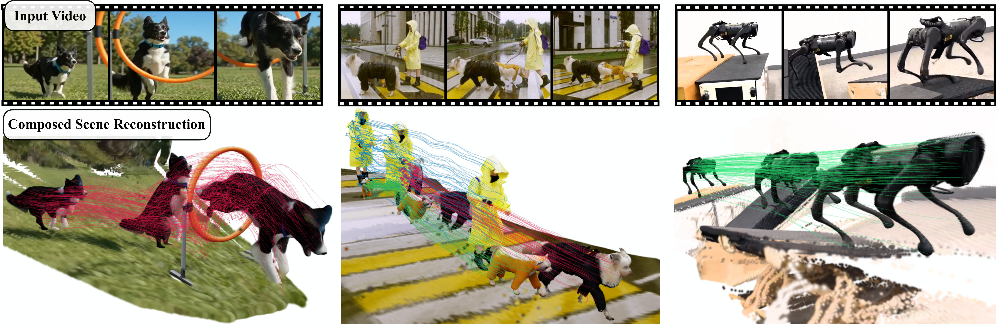
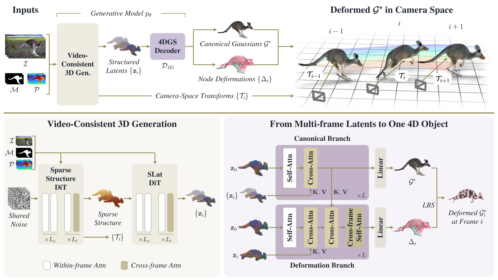

Generalizable Feed-Forward 4D Reconstruction In-The-Wild
Under review

We present 4DAnything, a feed-forward generative model that reconstructs complete 4D object geometry, appearance, deformation, and camera-space transformation from casually captured monocular videos. While optimization-based methods can reconstruct dynamic objects from real-world videos, they require costly per-sequence optimization; conversely, feed-forward alternatives enable efficient inference, but learn only from synthetic 4D assets and do not recover the object's camera-space motion, limiting their robustness on real videos. To bridge this gap, 4DAnything adapts a pretrained single-image 3D generative model to video by introducing cross-frame information sharing during generation and decoding to reason about the complete object and its motion, and extends data-driven training to real-world videos reconstructed offline by test-time optimization. First, we preserve the pretrained 3D prior knowledge and reuse the model's self-attention to attend across frames, so that per-frame shape, appearance, and camera-space transformation stay coherent over time and regions visible in one frame inform those occluded in others. Second, the pretrained decoder is adapted to aggregate per-frame latents into a single set of canonical Gaussians and deformations, producing one consistent object with geometry and appearance correspondence across the video. Finally, to learn from diverse real-world data, we run test-time optimization offline to obtain large scale 4D pseudo-ground truth from videos in-the-wild, and use online direct preference optimization to score 4DAnything's own samples, reducing errors inherited from the pseudo-ground truth. Our method demonstrates state-of-the-art reconstruction performance on diverse sequences with complex motion, occlusions, and scene clutter, outperforming prior work on both synthetic and in-the-wild benchmarks.
Each object is predicted in the input camera's space, so its Gaussians drop straight into the reconstructed scene with no per-video fitting. Pick a video below, then drag to orbit the 4D objects inside the reconstructed scene.
Smoothed reconstructions in the input video's scene point cloud (inset: input video). Rendered live in the browser (WebGL2).

The pretrained 3D generator's self-attention is reused across frames, so shape, appearance and camera-space pose stay coherent and what one frame sees fills in what another hides.
The decoder aggregates per-frame latents into one set of canonical Gaussians plus per-frame deformations, which gives dense correspondence across the whole video.
Offline test-time optimization turns in-the-wild videos into 4D pseudo-ground truth; online preference optimization then scores the model's own samples to correct inherited errors.
Drag anywhere to rotate both reconstructions together; drag the ⇔ divider to wipe between them: ours on the left, the selected baseline on the right. All videos play frame-synced. Fixed input-view and novel-view renders are also available.
@inproceedings{anonymous2027fourdanything,
title = {4DAnything: Generalizable Feed-Forward 4D Reconstruction In-The-Wild},
author = {Anonymous},
booktitle = {Under review},
year = {2027}
}